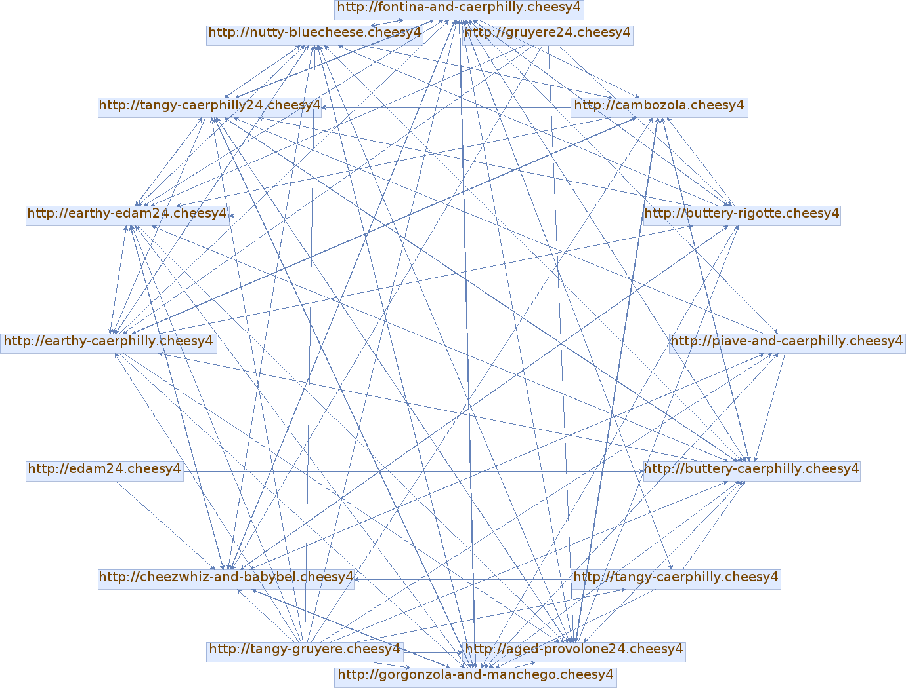
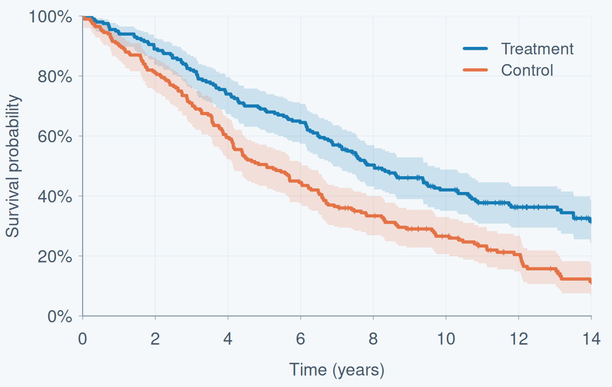
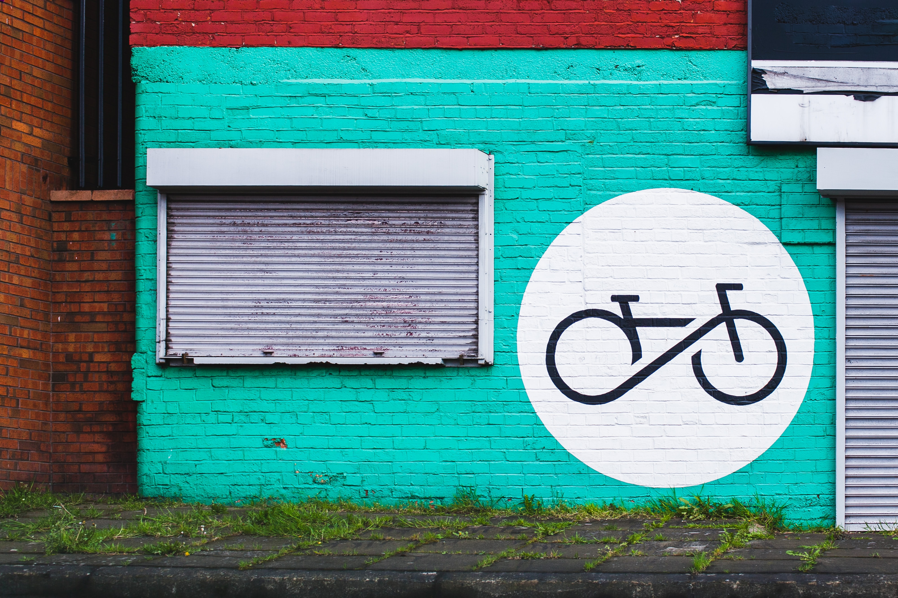

Modelling Training Status in Football
Bachelor’s thesis · Human Movement in Sports and Exercise · 2021
A multilevel analysis of GPS, heart rate and contextual match data to assess training status.
Bachelor’s thesis · Human Movement in Sports and Exercise · 2021
A multilevel analysis of GPS, heart rate and contextual match data to assess training status.

Course project · Software Development · 2025
A Java search engine combining web crawling, text indexing and relevance ranking.

Course project · Mathematical Statistics · 2025
Kaplan-Meier estimation and log-rank testing of right-censored survival data using R.

Seminar project · Applied Probability · 2026
Exploring Markov properties and their consequences through mathematical proofs and illustrations.

Capstone project · Google Data Analytics · 2022
Analysing bike-share usage patterns to inform marketing recommendations.
Magner, A., Greif, A., & Kohake, K. (2026).
Studienzufriedenheit im Sportlehramtsstudium:
Eine Mixed-Methods-Studie unter besonderer Berücksichtigung des Geschlechts.
Beiträge zur Hochschulforschung, 48(2), 110–139.
Full issue (article on pp. 110–139)